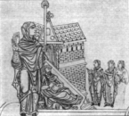

|
Le recenti rilevazioni archeologiche su Calvenzano, oltre ad avere grande
valore storico in s�, hanno contribuito a mutare sensibilmente i termini
di un'affascinante ed un po' dimenticata questione che si lega proprio
a questa localit�: quella del luogo di morte del filosofo cristiano tardoantico
Severino Boezio. L'essenza del "giallo" � questa: di Severino
Boezio (+ 524 d.c.), autore del De Consolatione Philosophie, si sa con
certezza quando e come mor� - per pena capitale comminata da Teodorico,
re degli Ostrogoti - ma non con altrettanta sicurezza dove. Le cronache
medievali, che salgono sino alla stessa et� boeziana, indicano come luogo
dell'esecuzione un "ager Calventianus" ovvero "Calventianum",
da identificarsi con qualcuna delle moderne localit� lombarde che portano
il nome Calvenzano. Piuttosto improbabile che Boezio sia morto in Calvenzano
bergamasco (l'unico, attualmente, a far comune a s�) o nel piccolo Calvenzano
frazione di Caselle Lurani (Lo), la querelle si � sempre sviluppata fra
un "partito" pavese ed uno milanese, che hanno avocato la prigionia,
la stesura del De Consolatione Philosophie ed infine il supplizio del
pensatore rispettivamente ad un luogo tuttora esistente in Pavia, denominato
"Borgo Calvenzano", oppure al già noto Calvenzano di Vizzolo
Predabissi.
Sino a pochi anni or sono, dunque, l'obiezione più forte che veniva posta
dai pavesi a chi sosteneva l'ipotesi "milanese" in merito alla
vicenda, era che, all'epoca dei fatti il questione, di Calvenzano di Vizzolo
non si sapeva neppure se esistesse (anche se lo si sospettava). Ora tale
obiezione, come si � ampiamente visto, sembra caduta: Calvenzano di Vizzolo,
sviluppato con ogni probabilit� attorno ad un luogo di culto, esisteva,
anche se si resta in attesa di più precise datazioni degli edifici riportati
alla luce al di sotto di S.Maria Assunta. In ogni caso, va pur sempre
considerata la plausibile differenza di importanza politica e sociale,
nel contesto dell'et� romano-barbarica, che poteva caratterizzare Ticinum,
poi Papia, di contro a Calvenzano "milanese". Mentre Ticinum
si avviava a divenire capitale del disorganico dominio longobardo, si
pu� presumere che Calvenzano di Vizzolo non fosse molto più che un modesto
borgo rurale.
Resta infine da dire che le reliquie venerate come di Severino Boezio
si trovano, insieme a quelle di Sant'Agostino e del re longobardo Liutprando,
nel bellissimo romanico di S.Pietro in Ciel d'Oro a Pavia, la cui diocesi
venera il filosofo come martire e santo, in seguito ad una concessione
di papa Leone XIII. Nonostante ci�, ciascuna delle due chiese che, quindici
secoli fa, potrebbero aver fatto da sinistro scenario dell'esecuzione
del filosofo, presenta un'epigrafe avocante a s� il tragico e nobile fatto.
A Calvenzano di Vizzolo, sul lato nord, il 23 ottobre 1947 ne � stata
murata una alla cui stesura ha sicuramente contribuito il card. Ildefonso
Schuster. A Pavia le lapidi sono due; una ovviamente in san Pietro in
Ciel d'Oro (restaurata, ma di et� sicuramente medievale) ed una, più recente,
nel tempio dei SS.Gervaso e Protaso.
Boezio ed il suo tempo
Anicio Manlio Severino Boezio, nato a Roma verso il 480 d.c., si trov�
a vivere nel pieno delle tristi convulsioni di quella straordinaria creazione
politica e civile che era stato l'Impero Romano. Egli infatti divenne
console e senatore quando sull'Italia dominava Teodorico, Teoderich o
Dietrich, re dei germani Ostrogoti, il popolo che nel 493 aveva sottratto
la penisola al precedente "inquilino" barbarico Odoacre.
Boezio fece parte della cerchia di uomini politici, letterati e consiglieri
latini più vicini a Teodorico, che, com'� noto, risiedeva ordinariamente
a Ravenna. Il regno del sovrano goto, nelle fonti coeve, ci � descritto
come un periodo di (relativa) pace e prosperit� dopo un secolo, quello
dell'agonia dell'impero, dipinto in questi termini dal retore latino Ennodio:
"... tutto era devastato da stragi cui non si sfuggiva, mentre la
fame uccideva chi sopravviveva alle spade, la scarsezza di viveri vinceva
i ripari sulle cime dei monti e le rocche munite, e la miseria, più fiera
delle armi, piegava anche quelli che erano rifugiati negli alti luoghi
...". Quanto ci sia di attendibile in queste adulazioni di Teodorico
non � dato saper; certo � che le cose ad un certo punto cambiarono, perch�
il sovrano barbarico, d'antica educazione bizantina, prese a sospettare
che i suoi consiglieri più fidi tramassero per riconsegnare l'Italia all'unico
suo padrone legittimo, l'imperatore di Bisanzio. Non era un sospetto infondato:
la riconquista infatti avvenne, fra il 535 ed il 553, con la terrificante
guerra greco-gotica che devast� ulteriormente il nostro povero Paese.
Tuttavia, Severino Boezio cadde nel novero dei presunti congiurati, a
quanto pare in base a prove inconsistenti, e come altri insigni uomini
di Stato latini, venne incarcerato e quindi messo a morte. La sua importanza,
nella storia della cultura occidentale, si lega sicuramente alla provvidenziale
funzione di mediatore fra mondo antico e Medioevo, riconosciutagli in
ogni epoca. In tempi di tristi circostanze, che ne preannunciavano di
più tristi ancora, Boezio voleva esplicitamente tradurre in latino (ma
non quello classico, bens� un latino "tecnico", con molti adattamenti
per renderlo calzante alla prosa greca) tutto Platone, tutto l'Aristotele
rimasto ed alcuni loro commentatori fra cui Porfirio (sec. II d.c.). Ci
riusc� solo in parte, con la versione latina delle opere logiche di Aristotele
- il cosiddetto Organon - con una serie di commenti ad altre opere
aristoteliche, ed infine attraverso i testi conosciuti come Institutiones
boeziane, che, sulla base della filosofia greca, considerano argomenti
come la musica, la matematica, la geometria. D'altronde, questo carattere
di testimone di un'et� che sfuma in un'altra � sempre stato individuato
nella più celebre opera boeziana: il De Consolatione Philosophie, scritto
in prigionia. In questo volumetto davvero la visione greca della filosofia
come consolazione razionale, socratica e stoica, si compenetra con i valori
allora nascenti del cristianesimo.
Un po' di critica
Premettendo, dunque, che il futuro della ricerca non � mai scritto in
anticipo e quindi il punto di domanda sul luogo di morte di Boezio continua
ad essere valido, riteniamo utile tuttavia richiamare le eccellenti critiche
svolte in merito dallo storico pavese Faustino Gianani, in un dottissimo
studio dato alle stampe quasi quarant'anni fa nella "Collana storica
melegnanese". Il Gianani, che considera prevalentemente fonti scritte
e non la storia monumentale, propende ovviamente per l'ipotesi "pavese"
relativamente a tutta la questione; certo � che tale conclusione � raggiunta
dopo un'esegesi estremamente accurata, che non sembra formulare obiezioni
per partito preso o per il semplice gusto di difendere una tesi campanilistica.
1) Il più antico documento che offre informazioni sulla morte di
Severino Boezio � il Chronicon di Mario Aventicense, vescovo della citt�
di Aventicum, l'attuale Avenches nel cantone svizzero di Vaud. Mario,
che vive nel VI sec. sotto il dominio dei germani Burgundi e poi dei Franchi,
afferma effettivamente che "Eo anno (524, nda), interfectus est Boethio
in territorio mediolanense". Aventicum era il più grande abitato
della Maxima sequanorum o Elvetia romana, ma - osserva il Gianani - c'�
ragione di dubitare seriamente che mario avesse una chiara percezione,
pur nella sua posizione, della differenza corrente fra l'ager, o territorium,
milanese piuttosto che quello di Ticinum. Inoltre il Chronicon � un testo
che nell'equivalente di due pagine (i medievali non scrivevano su carta!)
abbraccia un arco di 156 anni. Per altri cronisti medievali più tardi
(Freculfo vescovo, Onorio d'Autun) si pu� pensare che si limitino a copiare
Mario.
2) C'� poi il documento noto come Anonimo Valesiano o Annales Valesiani:
un testo che, nel ricostruire certe pieghe della storia d'Italia fra la
deposizione dell'ultimo imperatore d'Occidente ed il regno di Teodorico,
� una delle fonti più ampie di cui disponiamo. Il problema sollevato dagli
Annales � che il passo relativo a Boezio si presta ad una doppia lettura.
Alcuni, fra cui il Gianani, lo leggono infatti cos�: "Rex (Teodorico,
nda) vero vocavit Eusebium Praefectum Urbis Ticinum (o Ticini?, nda) et
inaudito Boethio protulit in eum sententiam; quem mox in agro Calventiano,
ubi in custodia habebatur, misere fecit occidi". Quindi: "Il
re (Teodorico) dunque convoc� Eusebio, prefetto di Roma (o di Ticinum,
a seconda del caso in cui tale vocabolo si declina), a Pavia, e, senza
ascoltare Boezio, emise la sentenza a suo carico; e presto (il re) lo
fece infelicemente uccidere nel territorio di Calvenzano, dove era in
prigionia".
Ma altri critici, fra cui lo Schuster, favorevoli a vedere in Calvenzano
di Vizzolo il teatro dell'esecuzione di Boezio, si affidano ad un'altra
interpretazione: "(...) Quem mox in agro Calventiano, ubi in custodia
habebatur, misit rex et fecit occidi". "Quem", allora non
si riferisce più a Boezio, ma al prefetto Eusebio, che Teodorico "manda"
(misit) ad eseguire la condanna a morte del filosofo in un ager (territorio
rurale) che si intuisce distinto dalla citt� di Ticinum. In questo caso
il Gianani osserva: quanto � attendibile, sia pure considerando la sintassi
latina imbarbarita dei secoli bassi, una dizione cos� tortuosa come la
seconda, che ripete un soggetto ("rex") a distanza tanto ravvicinata?
3) C'� infine l'opinione di Ludovico Antonio Muratori. L'illustre
storico, redigendo i monumentali Annali d'Italia, riscopr� anche l'Anonimo
Valesiano suffragando l'idea che l'"ager Calventianus" indicato
dal cronista fosse in effetti quello di Vizzolo. Ma anche qui ci si pu�
domandare: � più probabile che il Muratori, vissuto a Modena per grandissima
parte della sua vita, abbia operato una selezione su base critica, oppure,
essendo al corrente di un solo luogo chiamato "Calvenzano",
quello milanese, abbia indicato l'unico di cui era sicuro?
|
|
da IL MELEGNANESE
n.20/1999
sabato 13 novembre 1999

Boezio nella sua prigione,
consolato dalla Filosofia.
Miniatura di un codice del
"De Consolatione
Philosophie"
del sec. XI
(Parigi,
Biblioteca Nazionale)
|